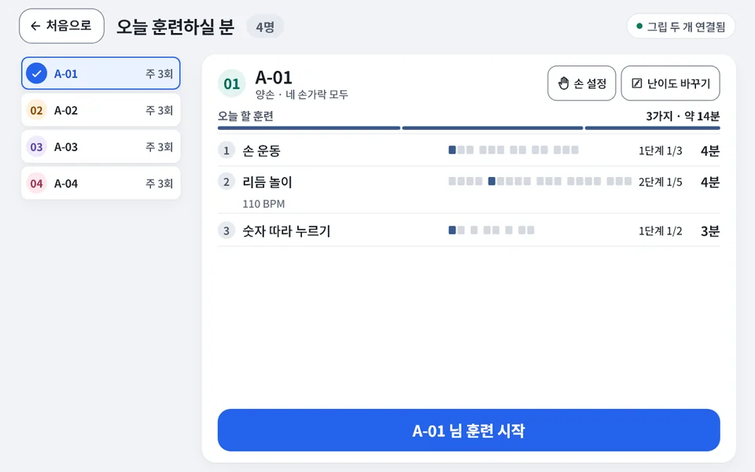
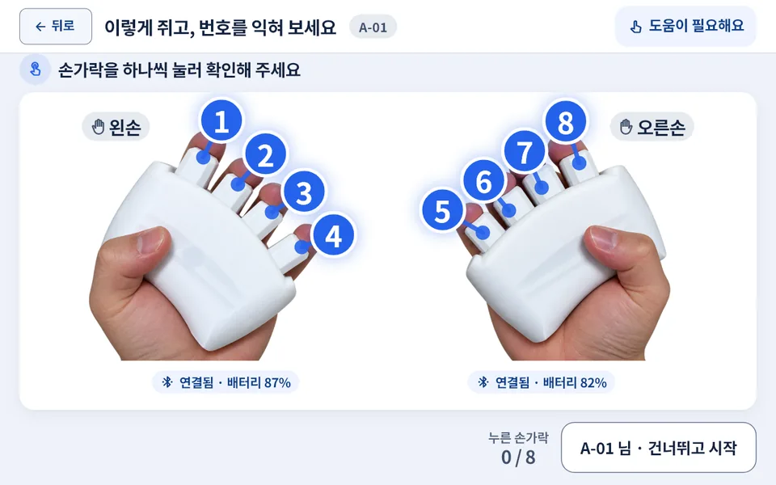
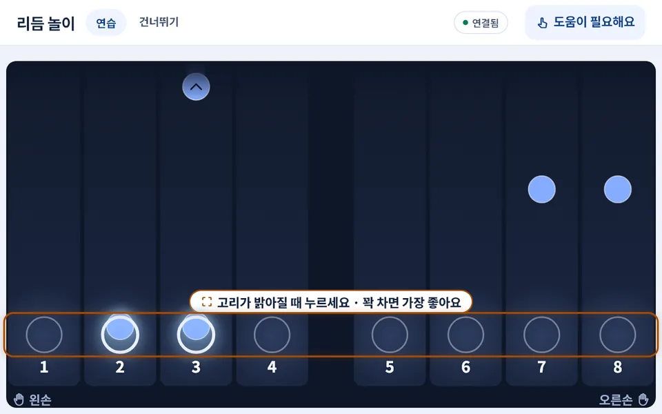
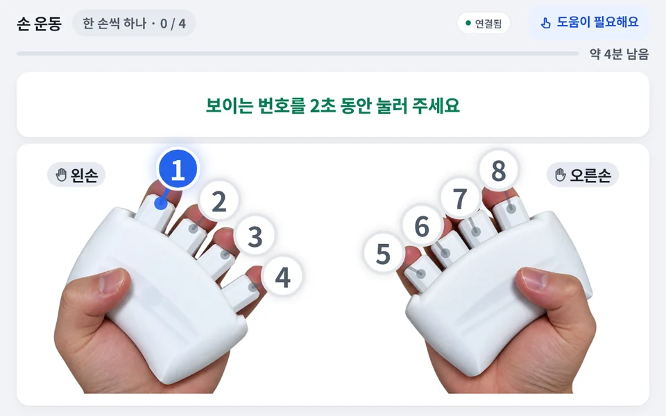
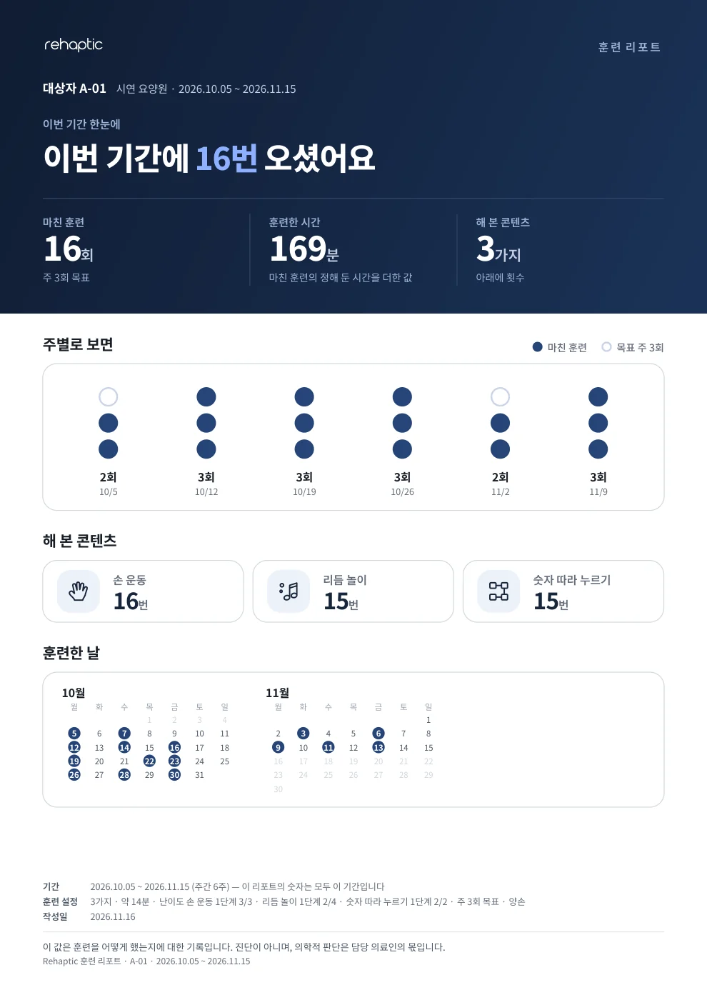

센터에서 함께하는 손 운동
복지관 · 경로당 · 주·야간보호센터 · 요양시설의 프로그램 담당자를 위한 센터용 Rehaptic 안내입니다.
2027년 상반기 출시 예정
양손 그립 한 쌍과 안드로이드 태블릿으로 훈련하고, 담당자는 웹에서 기록을 확인합니다.

진행
태블릿 하나로 이렇게 진행합니다
앱이 안내하고, 담당자가 곁에서 진행합니다.
센터에서 진행하는 한 회차
26초 · 시연장면 선택
진행 순서를 글로 보기

대상자 고르기
담당자가 태블릿에서 훈련하실 분을 고르면, 그분의 「오늘 할 훈련」(예: 3가지 · 약 14분)이 콘텐츠별 난이도와 함께 섭니다.

기기 확인
여덟 손가락을 하나씩 눌러 그림과 번호를 확인합니다.

설명·연습
할 일을 소리로 읽어 드리고, 연습한 뒤에 시작합니다.

활동·결과
콘텐츠 사이에 잠깐 쉬어 가고, 마치면 오늘 해 본 것을 보여 드리고 기록을 남깁니다.
기록
손가락별로 쌓이는 기록
오늘 훈련할 분부터 대상자별 기록까지, 인터넷 브라우저 하나로 확인합니다.
관리자 웹 둘러보기
20초 · 시연수행 기록 안내이 값은 훈련을 어떻게 했는지에 대한 기록입니다. 진단이 아니며, 의학적 판단은 담당 의료인의 몫입니다.
보호자용 리포트 첫 쪽 보기
어르신 · 보호자께는 리포트의 첫 쪽(한 일)만 드립니다.
이번 기간 한눈에
온 횟수 · 마친 훈련 · 정해 둔 훈련 시간 합
주별로 보면
주마다 마친 훈련
해 본 콘텐츠
콘텐츠별 횟수
훈련한 날
달력으로 표시

도입
도입 안내
기관별 운영 방식과 제공 기능은 제품 사양에 맞춰 협의합니다.
문의와 상담
센터 규모와 운영 방식을 듣고 필요한 구성을 함께 살펴봅니다.
구성 협의
그립과 태블릿 수, 운영 방식, 제공 기능을 협의합니다.
설치와 현장 교육
설치하는 날 담당자께 30분 교육을 드립니다.
운영 시작
담당자가 태블릿으로 프로그램을 진행하고, 기록은 관리자 웹에 모입니다.
도입하면 드리는 자료
- 사용 설명서 — 태블릿(담당자용)과 관리자 웹 두 권
- 현장 교육 안내 — 설치한 날 30분 교육용
- 시작 안내 한 장 — 관리자 웹 주소와 첫날 할 일
- 이용자 동의서 양식 — 어르신(또는 보호자)께 받는 양식
- 식별 번호 대장 양식 — 번호와 어르신을 맞춰 적는 엑셀
질문
자주 묻는 질문
무엇이 필요한가요?
햅틱 그립 한 쌍(왼손·오른손), 그립과 짝지은 안드로이드 태블릿 한 대, 그리고 관리자 웹을 열 인터넷 브라우저가 필요합니다.
인터넷이 잠시 끊겨도 태블릿이 기록을 모아 두었다가, 다시 연결되면 저절로 보냅니다.
어르신 이름이 기록에 남나요?
이용자는 이름 대신 센터가 정한 식별 번호(예: A-01)로 등록합니다. 태블릿에도 서버에도 번호만 남습니다. 번호와 어르신을 맞춘 표는 센터 업무용 PC 한 곳에서만 보관하도록 엑셀 양식을 드립니다.
한 손만 쓰시거나 빼고 싶은 손가락이 있는 분도 쓸 수 있나요?
어르신마다 「한 손으로 하시는 분」과 「훈련에서 뺄 손가락」을 설정할 수 있습니다. 설정은 그분에게만 적용되고 다음 분에게는 남지 않습니다.
너무 어렵거나 쉬우면 어떻게 하나요?
처음에는 콘텐츠마다 가장 쉬운 칸에서 시작하고, 그 뒤에는 담당자가 콘텐츠별로 난이도와 빠르기를 한 칸씩 올리거나 내릴 수 있습니다. 관리자 웹은 수행 기록을 바탕으로 난이도를 올리거나 내려 볼 만한 분을 알려 주며, 정하는 것은 담당자입니다.
소리나 진동이 불편해하시면요?
담당자 설정에서 소리 크기와 안내 말소리, 누를 때 진동을 줄이거나 끌 수 있습니다.
어르신이 화면을 잘못 누르면요?
훈련 중 어르신이 누를 수 있는 화면 단추는 「도움이 필요해요」뿐입니다. 훈련을 끝내거나 설정을 바꾸는 일은 담당자가 합니다.
동의를 철회한 분의 기록은 어떻게 하나요?
센터 관리자가 관리자 웹에서 그분의 기록을 모두 지울 수 있습니다. 지운 기록은 되돌릴 수 없습니다. 도움이 필요하시면 다문에 알려 주세요.
Rehaptic은 의료기기인가요?
Rehaptic은 손가락 운동 훈련 제품입니다. 의료기기로 허가 · 인증을 받지 않았고, 질병의 진단 · 치료 · 예방을 목적으로 하지 않습니다. 관리자 웹의 값은 훈련을 어떻게 했는지에 대한 기록이며, 의학적 판단은 담당 의료인의 몫입니다.
비용은 어떻게 되나요?
기관 규모와 구성에 맞춰 협의합니다. info@damun.asia로 문의해 주세요.
도입을 검토하고 계신가요?
센터 도입과 제휴, 그 밖의 궁금한 점을 편하게 문의해 주세요.